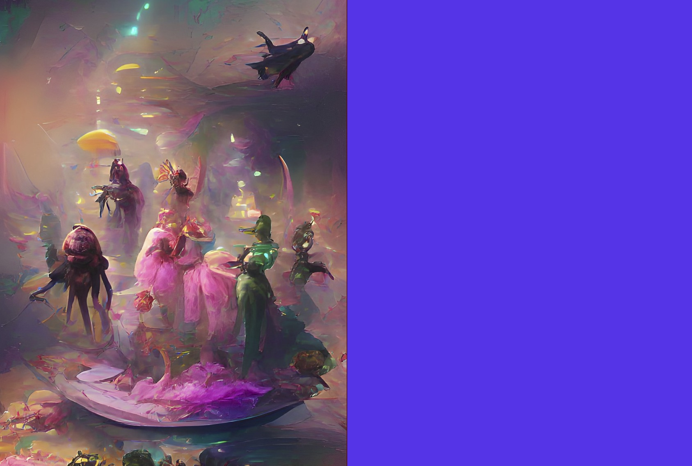

Strength Through Cooperation
Individually, the smaller spirits are too weak to be able to influence the invaders and the island. By banding together they are able to provide assistance to the larger, more powerful spirits. The makeup of this coalition frequently changes as the member spirits leave and join.
SETUP:
Put 1 {presence} on your starting board in land #6. Note that you have 6 Unique Power Cards.
Play Style:
Can take care of invaders in their lands in a pinch, but is most efficient by coordinating with other spirits. All about helping other spirits first to allow them to help you later. Can flexibly generate elements as needed which allows elemental thresholds to be met.